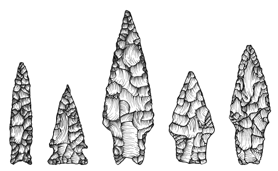
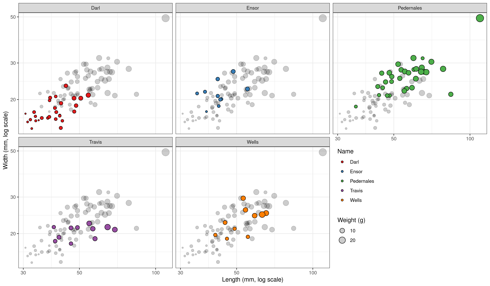

[1] 42Coding in R
Reflection on the last week
Tidy data principles
Readings

Objectives
Today’s goals…
- Notion of functions vs. objects.
- Intro on R data types (ie. what types of things are there).
- Intro on R types of objects (ie. how things are represented).
- Subsetting data frames.
- Reading data into R.
R is a smart calculator…
Functions and objects
Objects
- Anything is an object.
- Objects contain data (etc.)
- Objects have names.
- You choose the names.
- Name your objects wisely.
<- is an assignment operator
(use Alt + - in RStudio to write it).
Types of objects
Vector
- Basic data structure.
- Contains single data type.
- Created using function
c()(combine, concatenate)
Types of objects
Data frame & tibble
- A table.
- Has rows and columns.
- Rectangular, ie. identical number of rows in each column.
Subsetting
$operator returns a single column.
Data types
'data.frame': 4 obs. of 4 variables:
$ x: int 95 96 97 98
$ y: chr "a" "b" "c" "d"
$ z: logi TRUE FALSE FALSE TRUE
$ w: num 4.2 4.4 4.6 4.8Text strings
- Character data type, abbreviated as chr.
- Written in quotation marks (double or single).
- Functions with
is.prefix:
is.numeric(),is.double()etc.
Data types
Dichotomies
- Logical data type.
- Binary/boolean values.
- As
TRUEandFALSEinR.
Special values
- Missing values as
NA, ie. not available. Infand-Inffor infinities.NULLfor an object of a zero length.
Reading data in CSV into R
Comma separated values (CSV)
Plain-text document.
Practical exchange and preservation format for data sets.
Most open and commercial softwares will allow export in CSV.
Americas: separated by commas (
,), period (.) as a decimal mark.Europe: separated by semicolon (
;), comma (,) as a decimal mark.
Reading CSV into R
Comma separated:
read.csv(file = "path")
Semicolon separated:
read.csv2(file = "path")
Other delimiter:
read.table(file = "path", sep = "separator")
Practice
Dart points
Adapted from Carlson 2011
Dart points

Measurements on five types of dart points from Fort Hood in central Texas (Darl, Ensor, Pedernales, Travis, and Wells). The points were recovered during 10 different pedestrian survey projects during the 1980’s and were classified and measured by H. Blaine Ensor…
Exercise
- Download the dataset dartpoints.csv
- Explore the dataset using spreadsheet editor
- Save the dataset somwhere you can find it
- Start RStudio
- Create a script (Ctrl + Shift + n)
- Read the dataset from the path where you saved it
- Save it as
dartsobject - What kind of an object is it?
- How many rows and columns does it have?
- What columns does it have?
- What data types are there? What is the structure?
- Read details about the dataset using
?archdata::DartPoints
Hints:read.csv(),ncol()andnrow(),str(),colnames()
AES_707 Statistics seminar for archaeologists | Coding in R